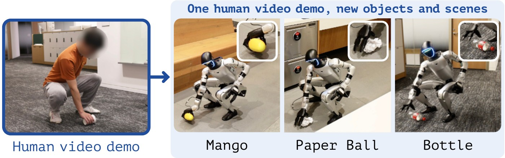
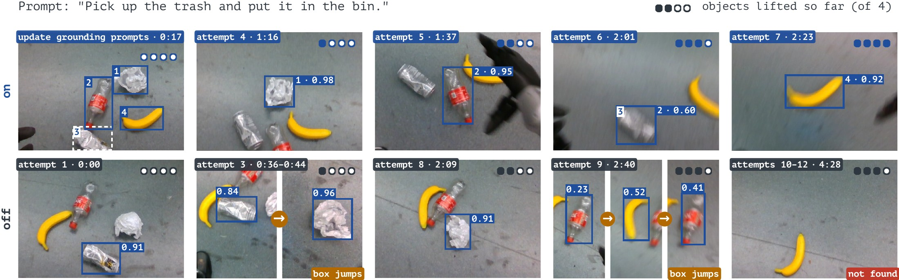

/ 01
Abstract
Scaling humanoid whole-body intelligence is often pursued through large-scale training of vision-language-action (VLA) or world action models (WAMs). Yet recent advances in pretrained vision-language agents provide reusable knowledge about objects, task goals, and physical interactions. This motivates acquiring new whole-body skills by adapting human motion references to new tasks via pretrained task reasoning and learning execution corrections online, without large-scale VLA or WAM training.
We present ATLAS (Agentic Test-time Learning and Adaptation System), an agentic harness that edits human motion for humanoid loco-manipulation from one human video demonstration and one prompt. The harness splits the motion into navigation and interaction phases as specified by a pretrained agent, plans the navigation, and aligns each interaction phase with the target object by its affordance and perceived geometry; a frozen whole-body tracker then follows the edited reference. During execution, online model-based RL mitigates the tracking gap between the edited reference and the robot’s motion, while a slow system lets the agent refine the harness’s grounding of each scene from robot observations. Success checks detect failures and trigger retries in place, generating new execution data and observations for further control and grounding adaptation. To the best of our knowledge, ATLAS is the first agentic whole-body intelligence system to achieve this without task-specific robot demonstrations, VLA or WAM training, or task-specific simulation training.
We demonstrate ATLAS on a real humanoid performing coordinated whole-body loco-manipulation, including tasks that combine stair traversal with object manipulation, using only onboard sensing. In both simulation and real-world experiments, ATLAS acquires skills from one human video demonstration and one prompt per task and transfers them across objects and scenes (Fig. 2). On real-robot floor picks of three objects, online correction raises success from 25% to 63%. On three whole-body pick tasks of the SIMPLE benchmark, a single human video serves all three tasks, and ATLAS succeeds in 29, 28 and 30 of 30 episodes with onboard sensing, competitive with VLA, WAM and imitation policies fine-tuned on 100 robot demonstrations per task.

/ 02
The ATLAS Harness
ATLAS connects a vision-language agent (System 2) to a frozen whole-body tracker (System 0) only through edited motion references, replacing an intermediate policy pretrained on robot data (Fig. 3). The harness uses execution feedback to adapt both grounding and control.
![Left, the prompt “Open the cabinet door.” and three frames of a person opening an under-counter cabinet, face blurred, retargeted into a robot reference motion. Center, the ATLAS harness: phase segmentation into navigation and interaction, object grounding with SAM 3 on the cabinet door’s handle, and motion editing of the reference, with a slow update loop. Right, a frozen whole-body tracker drives the robot, which opens the cabinet; its execution dynamics feed a fast system that learns by online RL and adds a correction to the edited motion before the tracker.](../media/fig_method_paper.jpg)
2.1 Task setup and deployment loop
A related human video already contains the whole-body coordination a task needs; what changes across tasks is mainly the interaction with the object. ATLAS therefore reuses the demonstrated motion and adapts it to the instructed interaction, even when the objects differ from those in the video (Fig. 3). On each attempt, the harness locates the instructed object, walks the robot to it if needed, and shifts the demonstrated end-effector target onto it; the frozen tracker executes the edited motion, and a progress indicator checks the end state and retries failures in place. Two kinds of error remain, and two learners reduce them from the robot’s own attempts: the fast system corrects the tracker’s end-effector error during execution (Sec. 2.4), and the slow system lets the agent revise what perception looks for and how success is judged (Sec. 2.5). An attempt ends in success or failure, an episode groups the attempts at one object placement, and a session keeps experience across episodes.
2.2 From human video to grounded motion
Motion reference. GVHMR7 recovers the person’s motion and GMR2 retargets it to the robot, giving a reusable reference of body poses and end-effector trajectories. The agent splits it into interaction steps, such as a pick and a place, and marks each step’s interaction start, contact, settle, and end frames.
Task specification. The agent specifies each step only in text and a few parameters, which the slow system can later revise. From the instruction, measurements of the reference such as the contact height and action axes, and a description of the robot’s end effector, it writes an object phrase (and a destination phrase if needed), contact and closure parameters, and a visible end state that the progress indicator checks for success. For example, when a banana pickup is reused to pick up a paper ball with a fingered hand, it names the paper ball, chooses an enclose closure, and defines success as the ball held above the floor.
Grounding and navigation. At run time, the segmenter, SAM 3,3 segments the phrase’s grounding target, the object or the part to interact with, such as a handle, and depth gives its center, extent, and axes, providing real-time, closed-loop feedback on the object position. From this geometry and the specified interaction, the harness computes the wrist orientation and the target contact point p⋆, for example the center of a handle. Navigation ensures that the interaction starts from the same pose relative to the object as in the retargeted reference: the interaction station is derived backward from the reference’s interaction, as its pelvis pose at the interaction start relative to its contact point, and a whole-body walking planner8 generates walking references that the frozen tracker follows to it.
2.3 Editing the reference and executing it
The harness changes only the interacting end effector’s target and, for higher objects, the body height, so the rest of the motion keeps the demonstrated whole-body coordination that the frozen tracker can follow.
Placing the reference. At the handoff, the robot stops walking and starts the demonstrated motion from where it stands: the reference is turned and shifted on the floor so that its starting pelvis coincides with the robot’s. To compare targets, measurements, and corrections while the body moves, all positions are then expressed in the attempt frame, fixed to the floor at handoff and pointing forward, left, and up; the robot knows where its pelvis is in this frame from leg kinematics, without external localization. The contact point is the part of the end effector meant to touch the object, at a fixed offset from the wrist.
Editing the end-effector target. Placed this way, the reference still moves the end effector toward where the person’s object was, so the harness shifts the end-effector target onto p⋆, gradually so that the reach stays smooth. With τ the annotated contact frame and creft the placed reference’s contact point at control step t, the target is
where αt rises from 0 at reach onset, the start of the wrist’s final approach to the object, to 1 at τ in proportion to the wrist path traveled, so that nτ = p⋆. New head-camera estimates update p⋆ during the crouch, closing the loop on the object position.
Adapting height. For higher objects, body and arm references rise by the height difference over the reach, with the feet on the floor and the pelvis capped at standing height; for lower objects, only Eq. (1) lowers the end effector.
Whole-body tracking. One tracker, ScaleBFM,9 follows both the walking and the interaction references at 50 Hz without switching policies, and stays frozen during deployment; for stair traversal, we fine-tune it beforehand on general stair-climbing data, not on any task. For load-bearing grasps, the reference pauses at contact with the end effector open (the hold) before closing; pushes, pulls, and presses close at contact.
2.4 Fast system: command correction via online model-based RL
Even with correct grounding, the frozen tracker leaves systematic end-effector errors that vary across attempts: its response depends on where the command lies relative to the body and on the posture along the reference. The fast system learns how the robot responds to end-effector commands with online model-based RL and corrects the command from reach onset through the hold (Fig. 4).

What the actor controls. Let ct be the contact point measured by forward kinematics. To bring ct to nt during the hold, the actor adds an offset ut on selected attempt-frame axes to the interacting wrist’s position command (the harness command); nt and the tracker’s weights stay unchanged. The actor outputs increments Δut = πϕ(st) of at most 5 mm per control step that accumulate,
starting from u = 0 at reach onset; clipping keeps ut within fixed bounds. Because the state st (defined below) includes ut−1, the actor can still reach any correction within these bounds.
Learning how the robot responds. After each attempt, a dynamics model learns how the contact point responds to the commands, working relative to the shoulder. Writing ct = bt + ht, where bt is the interacting arm’s recorded shoulder position, it predicts
where zt holds the reference phase (0 at reach onset, 1 at contact), ht and its last change, and recent and look-ahead commanded contact points relative to bt. Each command is the harness command plus the applied correction. We fit an ensemble of such models with randomized priors6 and a multi-step prediction loss on all attempts of the session except falls, including failed grasps; rollouts start from a measurement and feed back the predicted ĥ.
Training the actor. The actor solves a finite-horizon RL problem with state st, action Δut, and transitions given by the robot under the frozen tracker. With the model fixed, it learns by backpropagating the predicted hold error through the model’s reach-and-hold rollouts.4 The actor sees what the model sees plus the target: its state st adds to zt the errors nt+k − ct for k = 0, 5, 10, the applied correction, and the requested correction not yet applied because of command delay. Each rollout starts from a recorded attempt’s measured reach-onset state and replays its shoulder trajectory and harness command, substituting the actor’s corrections under the execution limits; this treats body motion as fixed context, an approximation for bounded corrections around a recorded movement. For load-bearing grasps, the reward is the contact error during the hold until closure,
on those axes; the undiscounted return sums it over the ensemble and replayed attempts, with a penalty on correction changes.5 The reach itself has no error term: corrections during the reach count only through the hold accuracy they lead to. This kinematic reward needs neither task-success labels nor ground-truth object state.
Goal augmentation. Goal augmentation1 reuses each attempt for other targets. Moving p⋆ by d shifts nt and the harness command by αtd (Eq. 1); since the model reads the harness command and the correction only through their sum, shifting the correction by −αtd leaves the issued commands unchanged, so the attempt is also an exact sample for p⋆ + d. Each replay draws d as another attempt’s p⋆ minus its own, both relative to the shoulder.
Online execution and updates. The model and actor start from scratch for each task step in each session; during the first 5 attempts the robot explores around zero correction. Both train in the background after every attempt, and each attempt loads the newest actor that passes a validity check. After closure the correction ramps to zero, and the frozen tracker executes the rest of the motion, including sustained contact.
2.5 Slow system: refinement through agent review
The slow system fixes failures that a command correction cannot: perception misses the target or segments the wrong object, or the progress indicator accepts an empty grasp.
Proposing revisions. Outside the control loop, the agent reviews the instruction, saved camera frames, and attempt summaries. When the phrase is vague or wrong, or the instruction covers several objects, it proposes one specific phrase per object, grounded in turn as the robot lifts each (Fig. 5). When carry frames show an empty grasp that was judged successful, it revises how the indicator checks the end state.

Validating and applying revisions. A revision is kept only if it does better when replayed on saved observations: a phrase must raise object detections on held-out frames, net of wrong-object detections, and an indicator revision must reduce disagreement with hindsight labels from later frames without adding false successes. Accepted revisions take effect at the next attempt.
References
- Marcin Andrychowicz et al. Hindsight experience replay. arXiv:1707.01495, 2017.
- Joao Pedro Araujo et al. Retargeting matters: General motion retargeting for humanoid motion tracking. arXiv:2510.02252, 2025.
- Nicolas Carion et al. SAM 3: Segment anything with concepts. arXiv:2511.16719, 2025.
- Marc Peter Deisenroth and Carl Edward Rasmussen. PILCO: A model-based and data-efficient approach to policy search. In ICML, 2011.
- Qiayuan Liao et al. SuperMimic: Scaling humanoid whole-body control with one differentiable world model. In CoRL, 2026.
- Ian Osband, John Aslanides, and Albin Cassirer. Randomized prior functions for deep reinforcement learning. In NeurIPS, 2018.
- Zehong Shen et al. World-grounded human motion recovery via gravity-view coordinates. In SIGGRAPH Asia, 2024.
- Tingwu Wang et al. MotionBricks: Scalable real-time motions with modular latent generative model and smart primitives. ACM Transactions on Graphics (SIGGRAPH), 2026.
- Weishuai Zeng et al. Scaling behavior foundation model for humanoid robots. arXiv:2607.15163, 2026.
Cite
@misc{ren2026atlas,
title = {{ATLAS}: Agentic Harness for Whole-Body Intelligence
from Human Video},
author = {Ren, Junli and Yao, Kaixiang and Long, Junfeng and Huang, Tao and
Wang, Huayi and Chen, Yuxiao and Ding, Wenhao and Wang, Yan and
Luo, Wenjie and Ivanovic, Boris and Tomizuka, Masayoshi and
Luo, Ping and Pavone, Marco and Chen, Yuxin and Tian, Ran},
year = {2026},
note = {Early release},
url = {https://atlas-humanoid.github.io/}
}